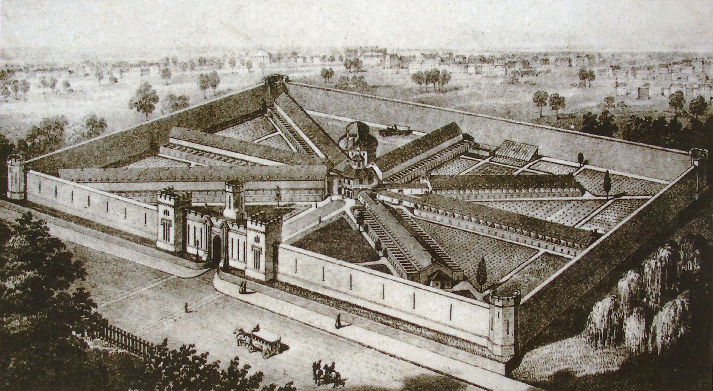

On August 22, 1845, Lewis W. Paine reached Milledgeville and saw the Georgia State Prison waiting for him. He remembered it as somber and gloomy. He was taken first to the blacksmith's shop, where the irons came off. Then came the cell building, the prison suit, and the office of the Principal Keeper, where a new life was explained to him as duty.
That is the power of Paine's 1851 memoir. It does not begin with a theory of punishment. It begins with a body brought through a gate. Metal is removed. Clothing is changed. A free man from Rhode Island becomes a Georgia prisoner.
Paine said he was there because he helped a man escape after that man had fled slavery. The title page of Six Years in a Georgia Prison says as much. The book is full of argument, anger, faith, and self-defense, but the strongest passages are often the plainest ones: who came for him, where he was taken, what he wore, when he was allowed to speak, and how he tried to keep his mind alive.
Paine's arrival gives the prison a physical shape: a place name, a gate, a blacksmith's shop, a cell building, an office, and officers who could speak the rules of the institution out loud.
Decades later, J. C. Powell described a different Southern prison world. In The American Siberia, the prison was not only a building. It could be a railroad camp, a turpentine operation, a guarded line of chained men, a pursuit through the woods, a contract, a camp captain, a wagon, a dog, a hospital entry, or a death record.
In Paine's world, the worker was carried into the prison. In Powell's world, the prison could be carried to the work.
The shift was not a neat textbook march from one system to another, and not a clean comparison between Georgia and Florida. Southern punishment became harder to locate as it spread outward into labor, land, transportation, and private profit.
Inside Milledgeville, Silence Was Part Of The Sentence
Paine's Milledgeville was built around routine. He wrote about labor in a cabinet shop, a carriage shop, and later a foundry. Work was not a side detail. It was part of what prison meant. The institution did not merely hold men; it organized their hands, their hours, and their speech.
The speech rules stayed with him. Paine wrote that prisoners generally were not allowed to talk except on Sundays until changes in 1848. Letters were restricted. Visits were limited. Punishment could mean Sunday confinement on bread and water. In more serious cases, he described whipping with a broad leather paddle attached to a wooden handle.
But the human part of the memoir is not only suffering. Paine kept studying. He wrote that he used spare time, including meal hours and Sundays, for mathematics, astronomy, mechanics, and natural philosophy. He also admitted that he did not obey rules against talking or having light in his cell at night except when he had to. That detail gives the memoir its pulse: the prisoner was watched, but he was still thinking.
- Paine comes south
He arrived in Georgia from Rhode Island and worked with factory machinery in Upson County.
- Arrival at Milledgeville
Paine says he entered the State Prison, had his irons removed, changed into prison clothing, and met the Principal Keeper.
- Work, silence, punishment, study
His memoir describes shop labor, restricted speech, limited correspondence, discipline, reading, and the prisoners around him.
- The pardon arrives
Paine wrote that his pardon reached the prison at night and that he received his discharge the next day.
A Georgia prison-register transcription appears to echo the spine of that story. It lists a "Payne, Lewis W." from Rhode Island, connected with Upson County, received August 22, 1845, sentenced to seven years, and pardoned January 21, 1851. That is a strong lead. It is not a license to smooth out every problem. One field in the offense description does not match Paine's account cleanly. A serious article leaves that conflict where readers can see it.
Two Prison Worlds
Prison With Walls
Cells, shops, officers, a schedule, restricted speech, and a central Georgia address. Work happened inside the institution.
Custody On The Move
Railroads, turpentine operations, contractors, guards, chains, escape pursuits, and records scattered across worksites.
Powell wrote from the other side of power. He was not a prisoner trying to describe confinement from below. He wrote as a former camp captain, a man who knew the administrative world of guards, contractors, chains, punishment, transportation, and escape. That perspective is limited, but it is also revealing. It shows the system's working vocabulary.
In that later Florida world, custody followed labor. A prisoner's place could be defined by a railroad line or a turpentine camp. The archive changes with the geography. Instead of one prison compound producing one set of central records, the evidence starts to appear in camp registers, contractor accounts, census schedules, hospital records, escape reports, death records, and scattered names.

A camp image used as interpretive visual context for the postwar labor-camp world, not as a direct photograph of Paine.

Eastern State helps explain the prison-design debate over separate confinement, silence, labor, and institutional architecture.
The Names Keep The Account From Becoming Abstract
Paine named Andrew Patterson, a prisoner serving a long sentence for mail robbery. A Georgia register transcription also lists an Andrew Patterson received in 1845 for mail robbery and later pardoned by the president of the United States. The name, offense, timing, and setting make that identification look strong.
Another name resists certainty. Paine wrote Benjamin F. Tuggie. A register transcription includes Benjamin F. Tuggle, an Upson County carpenter convicted of forgery. Several details point in the same direction, but the sentence information does not line up. That could be memory, transcription, recordkeeping, sentence modification, or a field being misunderstood. The gap is not a failure. It is a clue.
Powell's people require the same discipline. Guards, contractors, captains, prisoners, and camp workers can be tested against census material and other records, but a close spelling or similar job title is not proof by itself. Good reporting does not pretend a possible match is a settled identity. It tells the reader why a match looks strong, probable, possible, or unresolved.
The Question Underneath The Labor
Paine's case belonged to the world before emancipation. His imprisonment grew from helping a man who had fled slavery, and his account is shaped by the shock of a Northerner moving through Georgia law and slave society.
The postwar camp system belonged to a different legal order, but compelled labor did not disappear. After the Civil War, Black prisoners became a large majority of Georgia's incarcerated population as convict leasing expanded. Leasing tied punishment directly to commercial production: coal, lumber, brick, agriculture, railroads, and other work.
That does not mean slavery and imprisonment were identical institutions. They were not. The point is sharper and more documentable: emancipation changed the legal structure of coercion, while criminal law and convict leasing created another way for the state to compel labor. The records carry the proof in ordinary fields: race, county, offense, sentence, occupation, contractor, camp, punishment, escape, death.
What Remains After The Walls Fall Away
Paine's prison had an address. Powell's prison world had routes. Put together, the two accounts show punishment changing shape. It moved from the workshop and the cellblock toward camps and contracts, from one building toward a wider landscape.
The best version of this history is not a perfect answer. It is a reported conversation between memoirs and records. The memoir gives voice, sequence, fear, pride, anger, and memory. The register gives administrative fact. The census gives names and households. The archive gives the machinery. Where they disagree, the disagreement is part of the story.
Source Dossier
These sources are grouped for reader transparency. Transcriptions and workbooks are treated as discovery tools until checked against original images or archival pages.
Primary Sources
- Lewis W. Paine, Six Years in a Georgia Prison (1851). The main source for Paine's arrest, sentence, transport to Milledgeville, prison labor, discipline, speech restrictions, study, named prisoners, and pardon.
- J. C. Powell, The American Siberia (1891). The principal Florida source for railroad labor, turpentine work, guards, chains, camps, contractors, punishment, escape pursuit, and convict lease administration.
Official Records and Archives
- Georgia Archives, Record Group 21, Records of the Georgia Prison Commission. Includes Central Registers of Convicts, Principal Keeper reports, inspection reports, lease accounts, camp registers, pardon records, hospital records, deaths, escapes, and punishment material.
- Georgia Central Register of Convicts, 1817-1897. A public transcription was used as a discovery tool for Paine and people named in his memoir. Original pages should be checked before final identification.
- Georgia penitentiary and prison history materials. Used for context on the Milledgeville penitentiary, Georgia's 1816 penal code, and the later transition toward convict leasing.
- Digital Library of Georgia historical penitentiary material. Includes a surviving historical plan of the Milledgeville penitentiary that can support future visual work.
- 1880 federal census material for Florida's prison system. Supplied workbooks identify prison staff, prisoners, guards, contractors, and people associated with turpentine operations. They should be checked against the original census images.
Historical Scholarship
- Eastern State Penitentiary institutional history. Comparative context for separate confinement and the Pennsylvania system.
- Library of Congress Historic American Buildings Survey material. Architectural and historical context for Eastern State and the Pennsylvania model.
- Fryman, "Career of a 'Carpetbagger': Malachi Martin in Florida" (1977). Later scholarship used for Florida prison context and for testing parts of Powell's retrospective account.